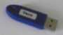
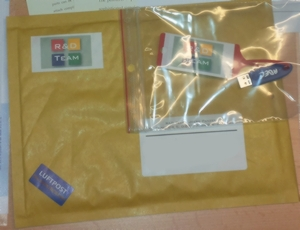

Release Code
 Temporary or Student Release Code |
 USB-Key  |
 |
AKABAK Professional needs a Release Code in order to enable saving result files of the solving stage as outlined in chapter Processing. The demo-version does not save result files and there is no need of a Release Code.
Running AKABAK Professional without a Release Code still allows to load result files and to perform observations. However, re-solving the Boundary Element part will delete the previous result file. A warning is issued for this particular case.
Any Release Code is unique and enables AKABAK only on a particular computer.
Temporary Release Code
After purchasing you should have received an email with a temporary Release Code, in order to bridge the time between purchasing and arrival of the letter with the USB-key (see below).
In order to enter the temporary Release Code go to menu Help > Release Code, which opens the dialog:
Steps
- Open the dialog at menu Help > Release Code.
- Paste the Release Code in second field.
- Click on Ok in order to save the code.
USB Key
The USB-Key is mailed to you or to your company after purchasing AKABAK.
The USB-Key conveniently generates the Release Code after connecting to a USB-port of your computer and after opening the dialog at menu Help > Release Code...:
Steps
- Open the dialog at menu Help > Release Code.
- Fit the USB-Key to a USB plug of your computer.
- After some seconds a green light should be shown.
- Click on Ok in order to save the code.
Note that you need your USB-Key only for installation or when you change the computer or parts of it. Keep the key at a safe place or return it to the administrator.
Release Code without USB / Student Licence
It is also possible to obtain a permanent Release Code from R&D-Team without using the USB-Key. This is necessary for the student license or if the computer has no USB connection. In order to receive such a Release Code, send us your machine identifier as reported in the dialog:
a) Steps for Inquiring Release Code
- Open the dialog at menu Help > Release Code.
- Click bottom Email...
- Send email to info@randteam.de.
b) Steps for Redeeming Release Code
We will respond with the Release Code.
- Open the dialog at menu Help > Release Code.
- Paste the Release Code into the second field.
- Click on Ok in order to save the code.
Notes
Once installed, there is no need for connecting the USB-Key.
However, keep the key at a save place in case AKABAK will ask for a new Release Code. This may happen only in three cases:
- Installing on a new machine.
- After larger modifications to your computer.
- Erasing of .../All users/AKABAK.ini, a file which stores the Release Code.
In any of these cases, start AKABAK and proceed as listed above.